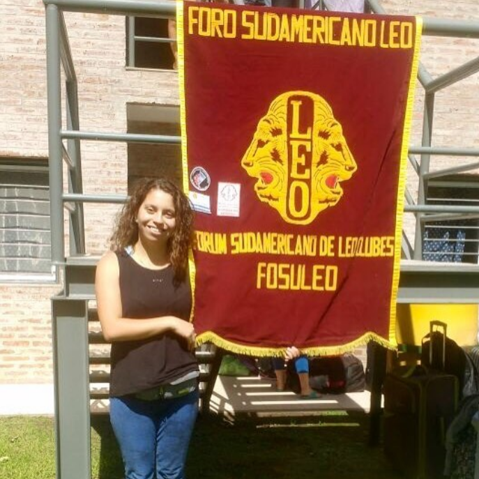
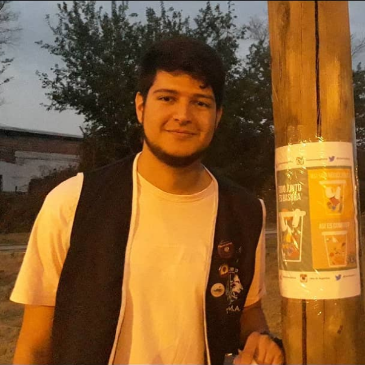
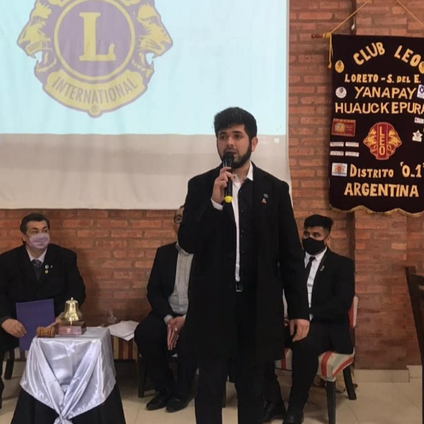
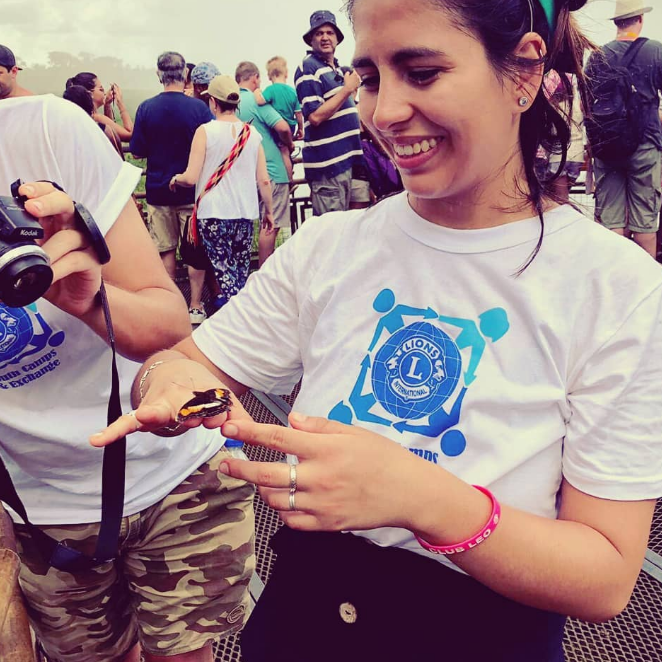
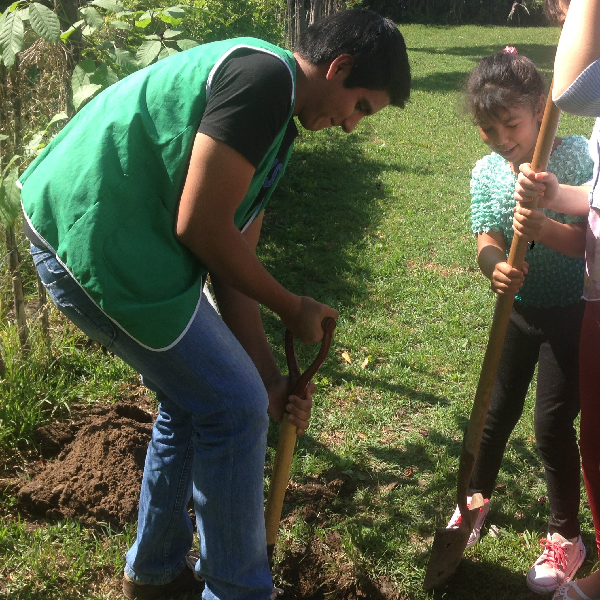

¿Porqué ser LEO?
Hay muchas maneras de retribuir a la comunidad, pero ser Leo es mucho más que solo servicio. Optar por ser socio de un club Leo le ayuda a crecer como individuo y como líder porque se une a una familia global de jóvenes que hacen del mundo un lugar mejor.
¿Qué es el Club Leo para vos?
"Estar en el Club LEO, pero especialmente en el TURMA, es tener la posibilidad de hacer actividades que mejoren la calidad de vida de las personas y animales, asumir desafíos para aprender constantemente y hacer amigos."

Luciana, 29 años
"El Club Leo es un epsacio que encontré en donde puedo mejorar al mundo con mi granito de arena, sumando amigos y valores que se aprenden en ningún otro lado."

Lucca, 27 años
"El Club Leo es un mi segundo hogar, donde puedo servir a loss que más necesitan junto con mis amigos"

Matías, 28 años
"Para mí, ser Leo es servir con amor, crear lazos de amistad y servicio, dar todo sin esperar nada y a la vez recibir la mayor de las satisfacciones cuando una persona te devuelve una sonrisa."

Macarena, 29 años
"Es un espacio y un momento, donde puedo entregar lo mejor de mí y apredner cada vez más, un lugar donde con amigos puedo ayudar a crear un mundo mejor."

Noel, 24 años
"Ser leo es ser un futuro lider, ser leo es ser un amigo y ser leo es formar parte de una gran familia."
Gimena, 22 años